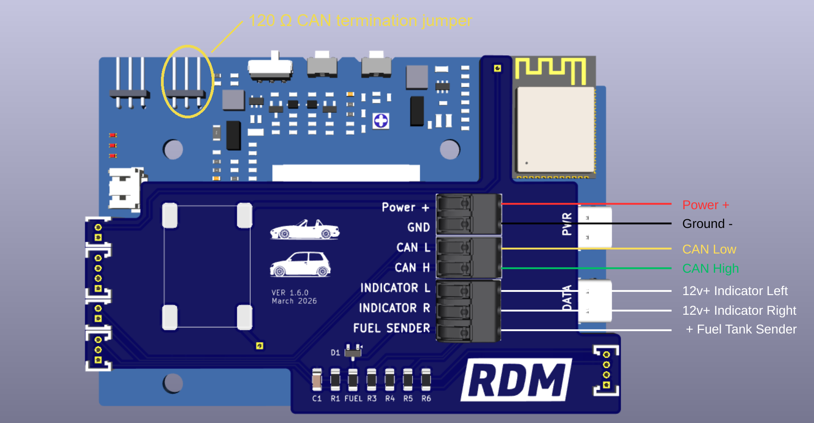
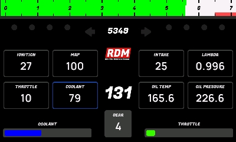
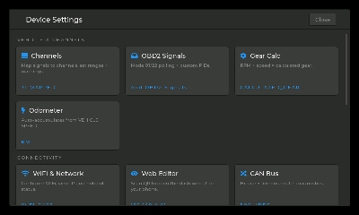
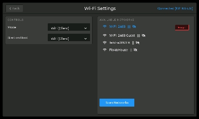
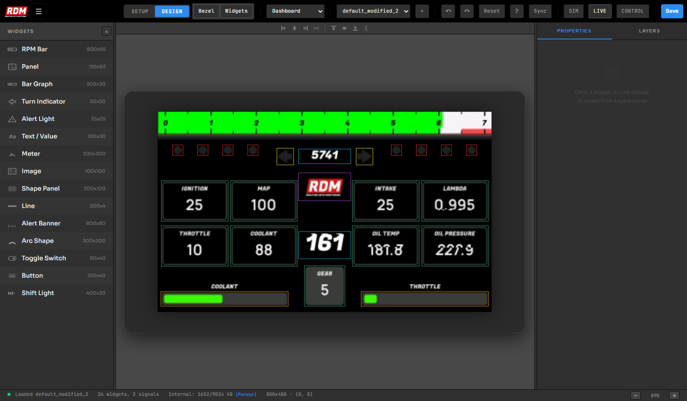
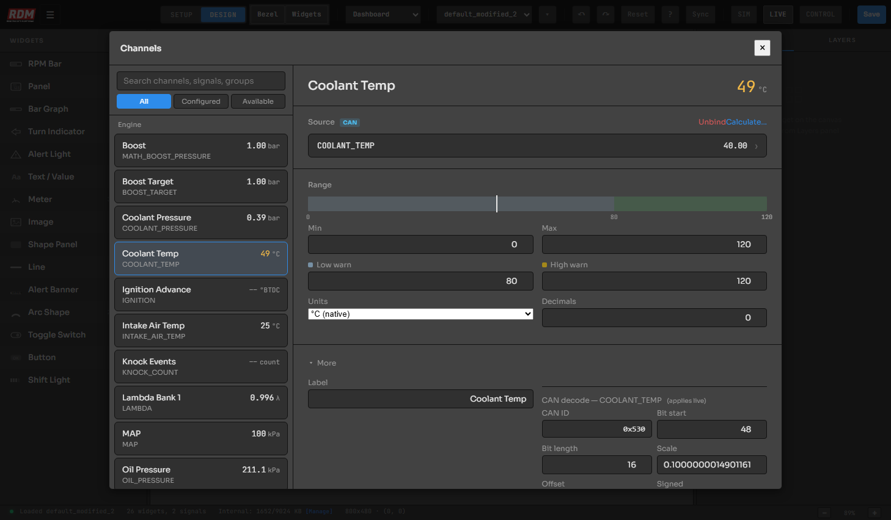
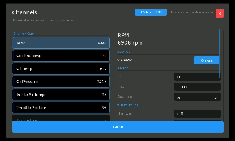
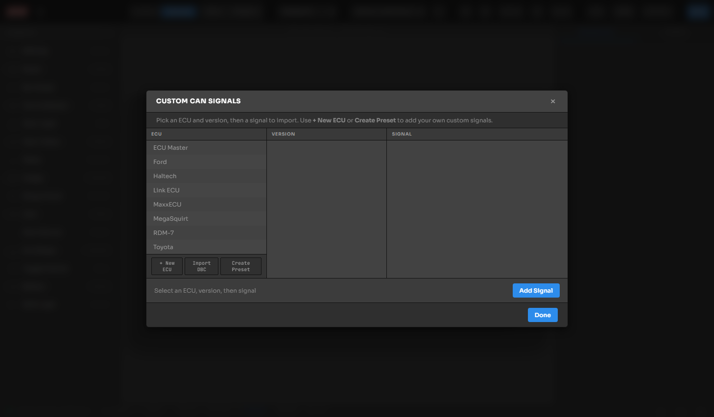
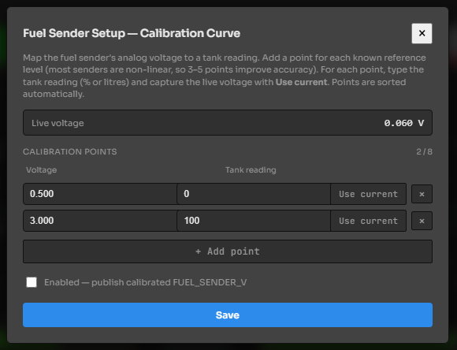
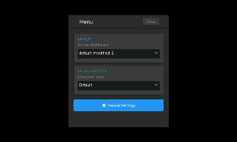

http://192.168.4.1Wiring the Dash
Everything connects to the quick-connect push terminals on the back of the dash — strip the wire, push it in, done. Get these few wires right and the rest of this guide is pure software.

| Terminal | Connect to |
|---|---|
| Power + / GND | Switched 12 V (ignition-on) feed and chassis ground. |
| CAN H / CAN L | Your ECU or vehicle CAN bus — use a twisted pair. |
| INDICATOR L / R | 12 V+ inputs — tap into your left and right indicator circuits to drive the on-screen turn arrows. |
| FUEL SENDER | The sense wire straight from your fuel tank float — the resistor is built into the dash, nothing to add. Sender ground goes to a sensor ground or ties in with the dash's ground. Calibration is in Section 09. |
First Boot & the Setup Wizard
With the dash wired up (Section 01), key on. The very first time it boots, the RDM-7 runs its on-screen Setup Wizard and does most of the work for you.
- CAN scan The dash listens on the bus and automatically detects the bitrate (125k / 250k / 500k / 1M). Make sure the engine is on, or at least the ignition, so the bus is talking. If the scan comes up empty, work through the CAN checklist in Troubleshooting at the back of this guide (Section 12).
- ECU auto-detect The CAN traffic is matched against the built-in ECU library and the best match is shown with a confidence score. If it guessed wrong, tap Pick a different ECU and choose from the list.
- Channels review The wizard binds every signal the ECU broadcasts (RPM, coolant, MAP, …) to named channels. Skim the list — tap any channel to point it somewhere else.
- WiFi Pick Join WiFi Network or Start Hotspot — either one finishes the wizard and drops you on the dashboard. Section 03 covers what each means.

Built-in ECU presets
| Preset | Good for |
|---|---|
| ECU Master Black / Classic | EMU Black & Classic standard broadcast |
| MegaSquirt MS3-Pro | MS3-Pro standard CAN broadcast |
| Haltech Nexus / Elite | Haltech V2 protocol |
| MaxxECU 1.2 & 1.3+ | MaxxECU dash broadcast (1.3 adds oil/fuel pressure) |
| Link ECU Generic Dash | Link generic dash stream |
| Ford Falcon BA/BF & FG | Factory Falcon CAN buses |
| Toyota 86 / Subaru BRZ | Factory HS-CAN, 2012–2020 |
| OBD2 Standard | Any 2008+ car via the OBD2 port — no aftermarket ECU needed |
Get Connected
The dash talks to your phone or laptop over WiFi in one of two modes — its own hotspot, or joined to your home network. It's one or the other: pick it from the Mode dropdown in Setup → Device Settings → WiFi & Network, and switch whenever you like.
Hotspot mode (zero setup — in the car)
Pick Start Hotspot in the wizard, or set Mode to Hotspot in WiFi Settings. Then join the WiFi network named RDM7-XXXX (the XXXX is unique to your unit) — the password is unique to your unit and shown right on the dash (setup wizard, and any time under WiFi Settings); you can change it there too. A captive-portal prompt usually pops up and lands you straight in the editor; if it doesn't, browse to http://192.168.4.1.
Client mode (join your home network)
Pick Join WiFi Network in the wizard, or set Mode to WiFi (Client) in WiFi Settings: choose your network from the scan list and type the password. Once connected, the dash's address appears at the top of that screen — browse to it from anything on the same network, and bookmark it. There's a QR code too if your phone is closer than your keyboard. (Can't reach the dash? Your router's client list will show it as RDM7….)


The Web Editor at a Glance
Browse to the dash's address and the RDM-7 Visual Designer loads — this is where you build screens and configure data. Changes appear on the real dash the moment you hit save.
- Widgets palette (left) — drag gauges, bars, panels, text, indicators, warning lights, images and more onto the canvas.
- Canvas (center) — your dashboard, live. Drag to position, use the alignment tools to line things up. The canvas previews real values from the car by default (toggle with the LIVE pill).
- Inspector (right) — select any widget to edit its channel, range, colors, fonts and alert behavior.
- SAVE — writes the layout to the dash and reloads the screen instantly.
- Menu (☰) — Channels, Live Signals, Custom CAN Signals, OBD2 Setup, ECU Preset, Data Logger, Gear Setup, WiFi, Device Info and Diagnostics.

Channels — Wiring Data to Widgets
A channel is a named value like RPM, Coolant Temp or Boost. The channel owns where the data comes from (ECU CAN, OBD2, custom CAN, or the dash's own inputs) plus its units, range and warning thresholds. Widgets just point at a channel — so you can swap data sources without touching your layout.
Assign a channel to a widget (web)
- Click the widget on the canvas — the Inspector opens on the right.
- Click the Channel field — the channel picker opens. Search or scroll, then select.
- The widget immediately follows that channel's live value, units, decimals and thresholds.
Change where a channel gets its data
- Open ☰ → Channels. Use the All / Configured / Available filter to find what you need.
- Select a channel — its detail pane shows the current source as a badge (CAN, OBD2 or RDM-7).
- Hit Change on the source to pick a different ECU preset signal, an OBD2 PID, or a fully custom CAN decode.


Changing Units & Decimals
Prefer °F over °C, psi over kPa, mph over km/h? Units live on the channel, so changing them once updates every widget bound to it.
In the web editor
- Open ☰ → Channels and select the channel (e.g. Coolant Temp).
- In the Range section, pick the display unit from the Units dropdown and set Decimals.
- Min / Max and warning thresholds in this section are shown and edited in your chosen unit — type what you see on the gauge.
On the touchscreen
- Go to Setup → Channels and tap the channel.
- In the Range section, pick the unit from the dropdown — the whole page recalculates instantly, including the live value.
- Edit range and thresholds with the keypad, in the displayed unit.
Custom CAN Signals
Got a sensor module, a non-listed ECU, or a one-off CAN message? Decode anything on the bus yourself.
Add a one-off signal
- Open ☰ → Custom CAN Signals. The browser shows the preset catalog; tap + Add CAN Signal to create your own.
- Fill in the decode: CAN ID (hex), bit start, bit length, scale, offset, byte order (Intel/LE or Motorola/BE) and whether it's signed.
- Save, then bind a channel to it (Section 05) and drop a widget on it. The value goes live immediately — watch it in ☰ → Live Signals while you dial the decode in.

Import a DBC file
If you have a .dbc database for your vehicle or device, import it from the menu — every message and signal inside becomes available to bind, no manual bit-math required.
Save your own preset
Built a full set of decodes for an unlisted ECU? Save it as a custom preset — it appears alongside the factory presets so you (or your next car) can apply the whole set in one tap.
OBD2 — Filling the Gaps
On a factory car (2008+), the dash can poll standard OBD2 PIDs over the same CAN connection — either as the main data source or to back-fill what your ECU doesn't broadcast.
- Whole-car OBD2: pick the OBD2 Standard preset in the wizard — ~30 common PIDs are polled automatically.
- Fill from OBD2: in a channel's detail pane, tap the Fill from OBD2 chip — the dash probes the car for a matching PID and binds it if found. Great for adding intake temp or fuel level next to ECU data. (No fuel PID on your car? Wire a sender directly — see Section 09.)
- OBD2 Setup (☰ → OBD2 Setup) lets you browse supported PIDs and manage polling; Diagnostics includes a DTC fault-code reader.
Fuel Level Sender
Most aftermarket ECUs don't broadcast fuel level, and not every car exposes it over OBD2. The dash reads a resistive tank sender directly — wire two wires, then teach it your tank with a quick calibration.
Connect the sender
- Run the sense wire from your fuel tank float straight into the FUEL SENDER terminal (see the wiring map in Section 01). The resistor is built into the dash — no external components needed.
- The sender's ground goes to a sensor ground, or ties in with the same ground as the dash.
Calibrate it
You don't enter resistances — you capture the live voltage at tank levels you already know. Open ☰ → Fuel Sender in the web editor (or the Fuel Sender card in Device Settings on the dash):
- Set your end points With the tank empty, set Tank reading to
0and tap Use current to grab the live voltage. Fill the tank, set the next point to100(percent) or your tank's litres, and tap Use current again. - Add mid points (optional) Senders are rarely linear. For a truer gauge, add points in between — quarter, half, three-quarter — each captured with Use current. Up to 8 points; the dash sorts them and interpolates between.
- Enable & save Tick Enabled — publish calibrated FUEL_SENDER_V and hit Save. Leave it unticked to read raw voltage while you're testing.

Alerts & Thresholds
Warning limits also live on the channel — set them once, and every gauge, bar and panel bound to that channel reacts.
- Open the channel (web ☰ → Channels, or Setup → Channels on-device).
- Set Warn Low and/or Warn High in the Range section — in your display units.
- On the dash: arcs and meters show a redline zone, bars and panels change color, and warning-light widgets trip when the value crosses the limit.
Everyday Features
| Feature | Where | What it does |
|---|---|---|
| Data logger | ☰ → Data Logger | Records all channels to CSV. Set a rate (or Max), start/stop, and download logs straight from the browser. Requires an SD card fitted in the dash. |
| Gear indicator | ☰ → Gear Setup | Calculates current gear from RPM + speed. Enter tire size, final drive and gear ratios once. |
| Layouts | Editor toolbar | Save multiple dashboards (street / track / debug) and switch between them. Layouts are portable between RDM-7 units — your car-specific CAN setup stays on the device. |
| Screen rotation | Setup → Device Settings | Rotate the display for your mounting orientation. |
| Firmware updates | Editor banner | When an update is available the editor shows a banner at the top — one click installs it over WiFi, with a live progress bar. The dash keeps the previous version as a fallback if anything goes wrong. (Current version is under ☰ → Device Info.) |

Troubleshooting
No CAN data? Work down this checklist
- Wake the bus Ignition on — better yet, engine running. Most buses are silent with the key out.
- Check the pair CAN H and CAN L are easy to get backwards — swapping them won't damage anything, so if you're seeing nothing, swap and retry.
- Termination A CAN bus needs a 120 Ω resistor at each end. If the dash is at the end of the bus (e.g. wired straight to an ECU), enable its built-in termination with the jumper at the top-left of the board — the right-hand one of the two 3-pin headers, marked with a yellow tab on the back (circled in the Section 01 photo).
- Bitrate Re-run the bitrate scan from Setup → Device Settings — a wrong bitrate looks exactly like a dead bus.
- Wiring quality Use a twisted pair for CAN H/L, keep it away from ignition leads, and make sure grounds are solid.
| Symptom | Try this |
|---|---|
| Gauges show -- | The channel has no fresh data. Check ignition/engine is on, then ☰ → Live Signals to see what's arriving. Values go stale after 2 seconds of silence. |
| Wizard found no CAN traffic | Work down the CAN checklist above — wake the bus, swap H/L, check 120 Ω termination, re-scan the bitrate. |
| Wrong / weird values | Usually a decode mismatch — confirm the ECU preset matches your ECU firmware's broadcast version, or check scale/offset/endian on a custom signal. |
| Can't reach the editor | Confirm you're on the same network as the dash. Fall back to the hotspot: join RDM7-XXXX and open 192.168.4.1. |
| Dash dropped off home WiFi | The dash keeps driving the gauges and falls back to its own hotspot — join it, open WiFi Settings in the editor and re-enter the password. |
| Fuel gauge pinned or wrong | Open ☰ → Fuel Sender and watch Live voltage. If it doesn't move with fuel level, check the sense wire and the sender's ground. Otherwise recapture your empty and full points. |
| Widget ignores a units change | Make sure the widget is bound to the channel (Inspector → Channel) rather than carrying its own old settings — rebind and save. |